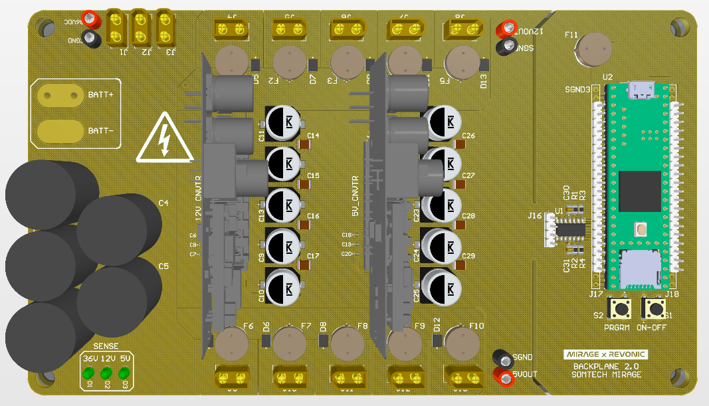

These include projects from classes and clubs. For more serious works, please see "Research."
An introductory write-up for MATH 482-980 (Honors Research Seminar).
Abstract: There are multiple versions of the spectral theorem, but in general, they are a result about conditions for a linear operator to be unitarily diagonalized: to be written diagonally in an orthonormal basis. In that case, the eigenvectors and respective eigenvalues are thought of as the spectra of the operator. This paper looks over spectral theorems dealing with self-adjoint compact operators only. It begins with a short overview of a purely algebraic proof of the theorem on finite dimension with ideas from [Axl26], followed by a short, largely analytic proof of the theorem on finite dimension from [Vog13], with insight onto the similarities and differences between the two proofs, and why both do not work on infinite dimension. Then, some theoretical background and a proof of the compact version of the theorem on infinite dimensional Hilbert spaces from [EW17] will be provided.
The power distribution system of SOMTECH's rover for the University Rover Challenge. (My project manager and I worked on this project together.)

An essay project for undergraduate real analysis (MATH 409H) introducing the Cantor set, Hausdroff measure, dimension (self-similarity, box counting, and Hausdroff dimensions) and various fractals. It's introductory and not very professional when it comes to citations (mostly from wikipedia), but I enjoyed it so I decided to include it.

(You have reached the end of this page.)